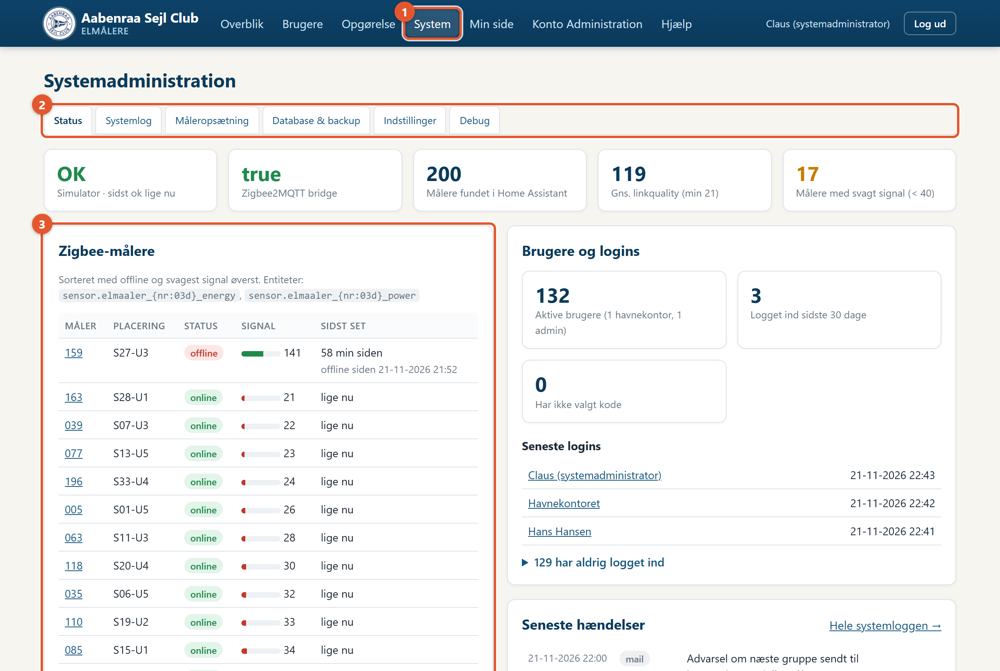
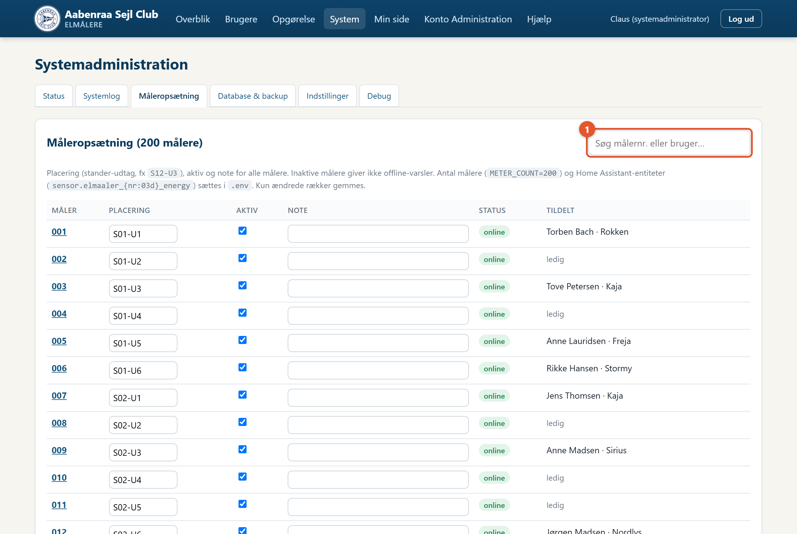
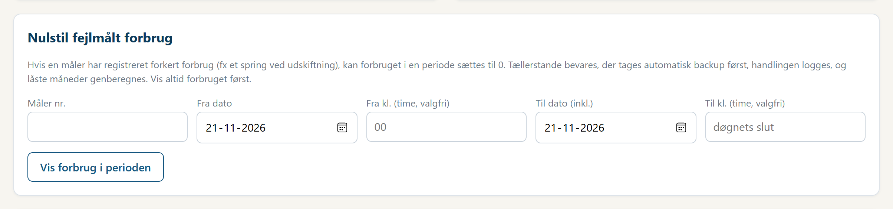
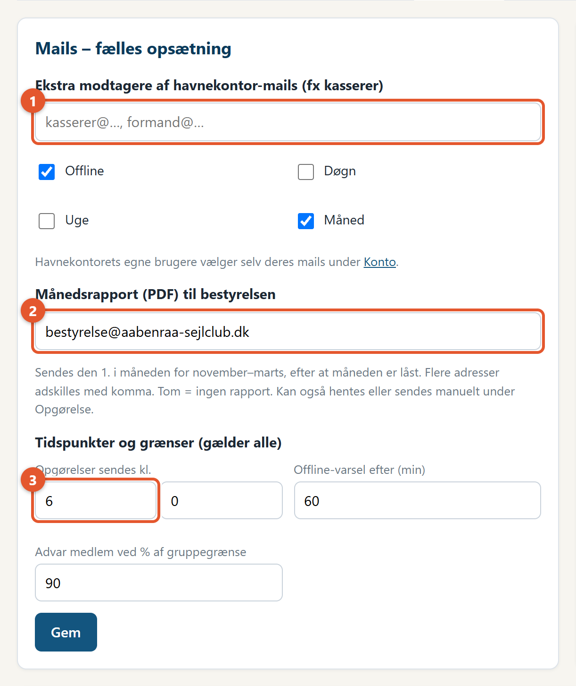
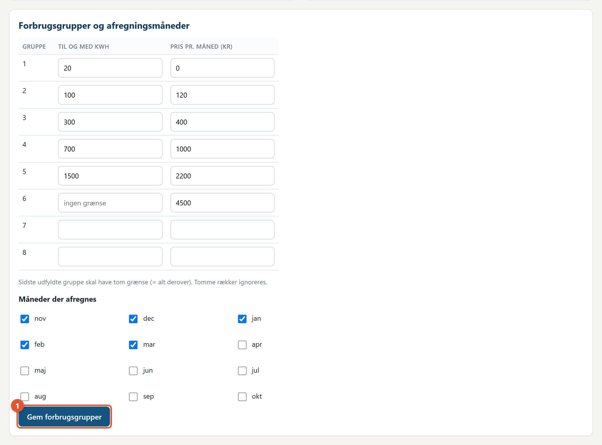
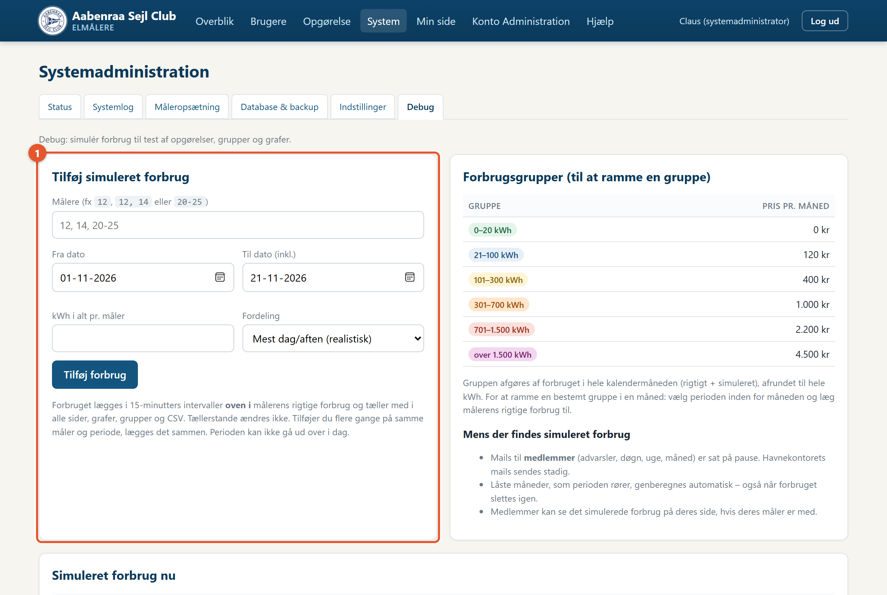

Elmålere
Manual for systemadministration
Aabenraa Sejl Club
Version november 2026
Indhold
- 1 · Roller og adgang
- De tre slags brugere
- Første systemadministrator
- 2 · Menuen System
- Status og Zigbee-målere
- Systemloggen
- Måleropsætning
- Database og backup
- Nulstil fejlmålt forbrug
- Indstillinger
- Debug (test)
- 3 · Månedsrapporten til bestyrelsen
- 4 · Drift og vedligehold
- Opdatering af systemet
- Backup – det vigtigste
- Automatiske job
- Manualerne på websiden
- Teknisk dokumentation
1
Roller og adgang
De tre slags brugere
| Bruger | Kan |
|---|
bruger
Medlem med båd | Se eget forbrug på Min side, vælge e-mails, bestille forbrugsrapport, skifte e-mail og adgangskode. |
kontor
Havnekontoret | Alt det, et medlem kan, plus: se alle målere, oprette og ændre brugere, tildele og fjerne målere, lave månedsopgørelser og hente afregning. |
admin
Systemadministrator | Alt det, havnekontoret kan, plus menuen System: status, systemlog, måleropsætning, database og backup, indstillinger (forbrugsgrupper, priser, mails) og test. |
Hvilke menupunkter du ser øverst på siden, afhænger af din rolle. Et medlem ser kun Min side og Konto Administration.
Første systemadministrator
Den e-mail, der står i ADMIN_EMAIL i serverens opsætning (.env), bliver automatisk systemadministrator ved start,
hvis der ikke findes nogen. Flere administratorer oprettes under Brugere ved at give rollen admin – det kan kun en
systemadministrator.
Havnekontorets og medlemmernes siderSom systemadministrator har du også menupunkterne Overblik,
Brugere og Opgørelse. De er beskrevet i Manual for havnekontoret; Min side i Manual for medlemmer.
2
Menuen SystemFor brugere med rollen admin
Status og Zigbee-målere

- System i menuen – kun for systemadministratorer.
- Fanerne: Status, Log, Måleropsætning, Database & backup, Indstillinger og Debug.
- Zigbee-målere: forbindelse og signalstyrke (linkquality) for hver måler. Målere med svagt signal står øverst – flyt evt. en Zigbee-router tættere på.
Systemloggen

- Type: fx fejl, backup, mail, måler, bruger, tildeling, opgørelse.
- Søg i teksten, fx et målernummer eller en e-mail.
Alt vigtigt skrives i loggen: logins, ændringer af brugere og tildelinger, afsendte mails, backup, fejl og målere der går offline.
Måleropsætning

- Søg efter måler eller bruger.
- Ret placering (fx S12-U3), aktiv og note for mange målere på én gang, og tryk Gem ændringer. Inaktive målere giver ikke offline-varsler.
Database og backup

- Kopi uden for serveren: grå boks = OneDrive-kopien er i orden (med tidspunkt). Rød boks = der er ingen kopi, eller den seneste fejlede.
- Lav backup nu – fx før en større ændring. Kopiér til skyen nu sender de nyeste backups til OneDrive.
- Hent en backup ved at klikke på den. ★ = månedsbackup (den 1.), som gemmes i 13 måneder. De daglige gemmes i 30 dage.
Krypteringskoderne til OneDriveBackupperne i OneDrive er krypterede. Uden de to koder, der blev lavet ved opsætningen, kan de ikke læses. Koderne skal ligge i klubbens password manager eller i pengeskabet. Opsætning: se docs/07-elmaaler-installation.md, afsnittet "Backup i OneDrive".
Nulstil fejlmålt forbrug

Har en måler målt forkert i en periode (fx under en fejl eller en test), kan forbruget i perioden sættes til 0. Tryk først
Vis forbrug i perioden for at se, hvad der rammes. Selve nulstillingen kræver, at du skriver JA. Der tages backup
først, handlingen logges, og berørte låste måneder genberegnes. Tællerstandene røres ikke.
Indstillinger

- Ekstra modtagere af havnekontor-mails, fx kassereren.
- Månedsrapport til bestyrelsen – e-mailadresse(r). Tom = ingen rapport.
- Tidspunkt for de faste e-mails, offline-varsel efter X minutter og advarsel ved X % af gruppegrænsen.

- Ret forbrugsgrupper, priser og afregningsmåneder og tryk Gem forbrugsgrupper. Ændringen gælder nye beregninger – allerede låste måneder ændres kun ved genberegning.
Debug (test)

- Læg simuleret forbrug på en måler for at afprøve fx advarsler og grupper. Så længe der findes simuleret forbrug, vises en rød advarsel på alle sider, e-mails til medlemmer er sat på pause, og bestyrelsesrapporten sendes ikke. Slet altid det simulerede forbrug igen.
3
Månedsrapporten til bestyrelsen
Den 1. i hver måned fra december til april får bestyrelsen automatisk en PDF-rapport for den afsluttede vintermåned, sendt til
bestyrelse@aabenraa-sejlclub.dk. Den fulde opgørelse pr. båd er vedhæftet som CSV-fil (Excel).
Eksempel med opdigtede tal.
Side 1 – økonomi og forbrug
- Nøgletal: samlet forbrug (op/ned i forhold til måneden før), beløb til opkrævning, antal afregnede både og gennemsnit pr. båd.
- Forbrugsgrupper: antal både, andel, kWh og beløb pr. gruppe.
- Forbrug pr. dag for alle målere med gennemsnitslinje.
- Vintersæsonen indtil nu: kWh og opkrævning pr. måned og i alt.
Side 2 – detaljer og drift
- De 10 største forbrug med båd og medlem.
- Drift og datakvalitet: målere online, hvor mange målinger der er modtaget, offline-hændelser, forbindelse til Home Assistant, backup, nye og afsluttede tildelinger, ledige målere.
- Opmærksomhedspunkter: forbrug uden tildelt bruger (kan ikke opkræves), tildelte målere uden forbrug, manglende backup og sæsonafslutning.
Rapporten kan også hentes når som helst under Opgørelse → Månedsrapport (PDF) af havnekontoret.
4
Drift og vedligehold
Opdatering af systemet
Programmet ligger i et Docker-image. Efter en ny version skal imaget altid bygges om – ellers kører serveren videre med den gamle kode:
- Hent den nye kode til
/opt/stacks/elmaaler/elmaaler/ (git pull eller kopiér mappen).
- Kør
cd /opt/stacks/elmaaler && docker compose up -d --build.
- Log ind og tjek System → Status og System → Log for fejl.
Backup – det vigtigste
- Backup tages hver nat kl. 03. Daglige gemmes 30 dage, den 1. i måneden 13 måneder.
- En krypteret kopi lægges i klubbens OneDrive. Tjek jævnligt, at System → Database & backup viser en grå boks med et nyt tidspunkt.
- De to krypteringskoder skal ligge i klubbens password manager eller i pengeskabet.
- Prøv en gendannelse én gang om året på en test-pc.
Automatiske job
| Hvornår | Hvad |
|---|
| Hvert 30. sekund | Henter målinger fra Home Assistant |
| Hvert 15. minut | Gemmer en aflæsning pr. måler; advarsler om dyrere gruppe |
| Hvert minut | Tjekker for målere uden forbindelse (varsel efter 60 min) |
| Hver nat kl. 03 | Backup og kopi til OneDrive |
| Hver morgen kl. 06 | Daglige/ugentlige e-mails |
| Den 1. kl. 00:20 | Forrige måned låses |
| Den 1. kl. 06 | Månedsmails; nov–mar PDF-rapport til bestyrelsen |
Manualerne på websiden
Under Hjælp ser hver bruger de manualer, der passer til rollen: medlemmer ser medlemsmanual og quickguide, havnekontoret også sine egne, og systemadministratoren alle. Manualerne laves om med docs/manual/byg.py (se docs/manual/laes-mig.md) og kommer på serveren ved næste opdatering.
Teknisk dokumentation
Installation, opsætning af Home Assistant/Zigbee2MQTT, mail, OneDrive-backup og gendannelse står i
docs/07-elmaaler-installation.md i projektet på GitHub.